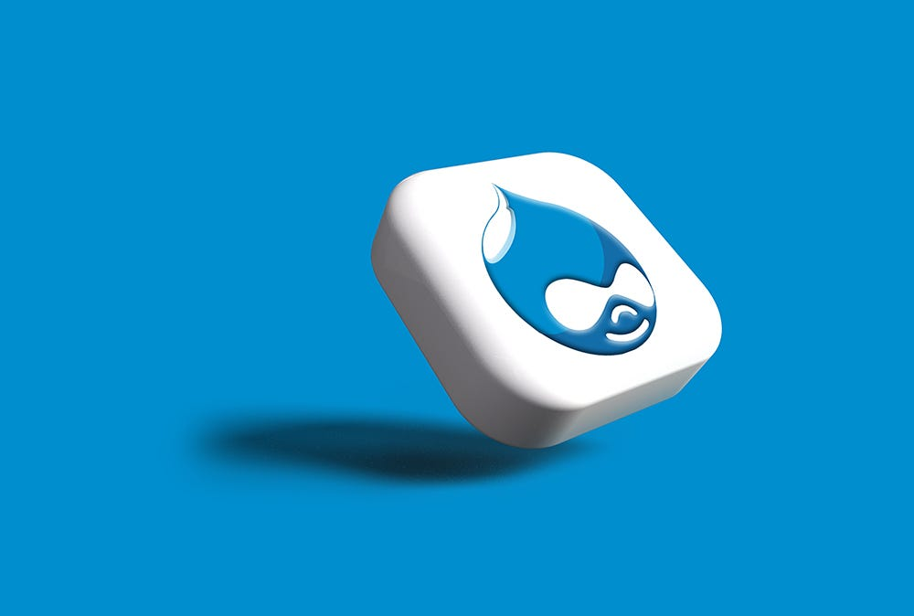
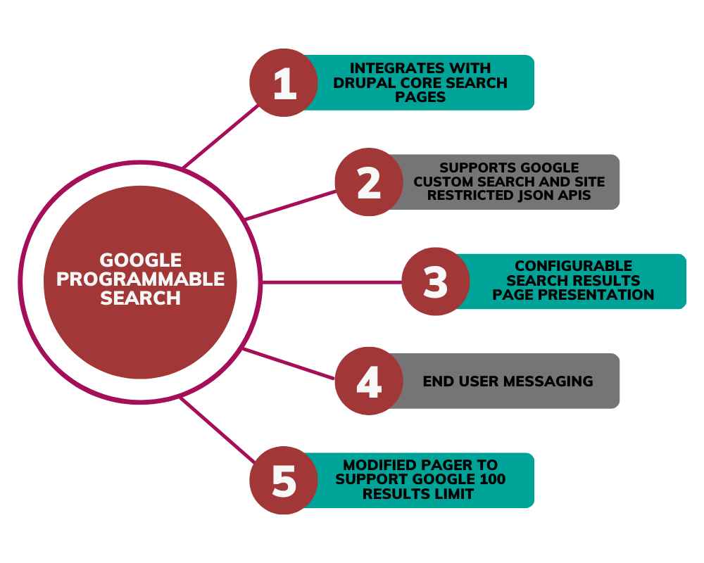
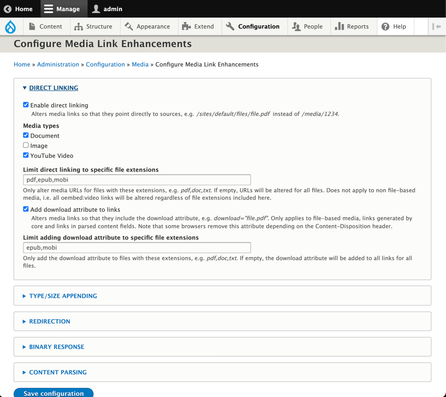

At CivicActions, Drupal is a core tool in making the web more accessible, human-centered, and beneficial to users. In addition to solving problems for our federal, state, and local government clients, CivicActioners are also active contributors to Drupal.org. In making these open source contributions, we are making a collective effort to improve the web experience for everyone.
“We have gained a lot from the Drupal community who have solved a myriad of problems and progressed the technology,” said Daniel Mundra, Associate Director of Drupal. “By contributing to the community we can return the favor, we can also bring our expertise to the table to solve more problems and help progress the technology further.”
For our ongoing Web Experience and Content Management Services (WECMS) project for Centers for Medicare and Medicaid Services (CMS), our team has been actively improving and modernizing sites such as Medicare.gov by migrating, re-platforming, and redesigning a portfolio of assets and products — and ultimately enabling beneficiaries, providers, and other stakeholders to better access information and data. Here are some of the latest improvements members of our team have made that have contributed both to CMS as well as the Drupal community.
Google Programmable Search
Google Programmable Search Engine allows the creation of custom search engines for a website. In this Drupal contribution, CivicActioners Timo Zura, Back-End Engineer, and Sam Lerner, Back-End Engineer, were able to integrate Google Programmable Search with core Drupal search functionality.
Multiple websites under the WECMS project had been using Google Custom Search, however the implementation of this functionality had been customized on a per-site basis by different teams over time. Similarly, Google’s JSON API offerings had also evolved.
This module was developed to bring consistency of implementation across the WECMS websites, while contributing back to the Drupal community where there was a need for an integration with Google Programmable Search focusing on the JSON API.
The module provides a configurable search plugin supporting the creation of one or more core search pages. Each page can be configured to communicate with a custom Google Programmable Search Engine via JSON API. Basic result sorting and promoted results are currently supported and a custom pager is provided to better accommodate the 100-results limitation of the JSON API.

The user experience on the search results pages can be customized using token-enabled custom messages, custom pre-processing hooks, and by overriding custom twig templates.
Both the Custom Search JSON API and the Custom Search Site Restricted JSON API are supported. Result links can be made relative to support development across different internal environments.
Media Link Enhancements
CivicActioner Cameron Prince, Back-End Engineer, contributed the Media Link Enhancements module, which gives site owners more control over how media is linked and displayed. Some core functions include enhancing media links to point directly to the source file or remote URL, as well as a download function for media links.

Contributing to the Community While Improving Government Services
Our team of Drupal experts always go above and beyond. CivicActioners have time and again demonstrated that our commitment to the open source community, and specifically the Drupal community, runs deep. We are passionate about improving the quality of these modules both for the sake of our clients as well as for the ultimate project of building a digital world that works for all.